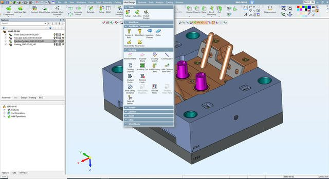
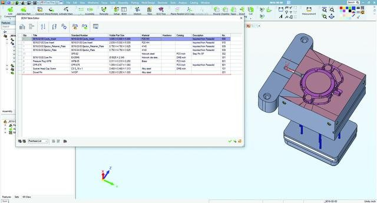
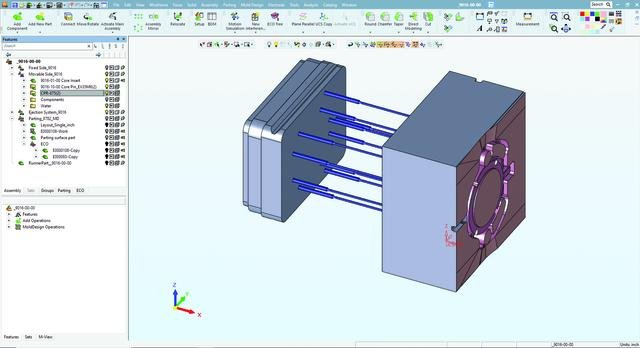
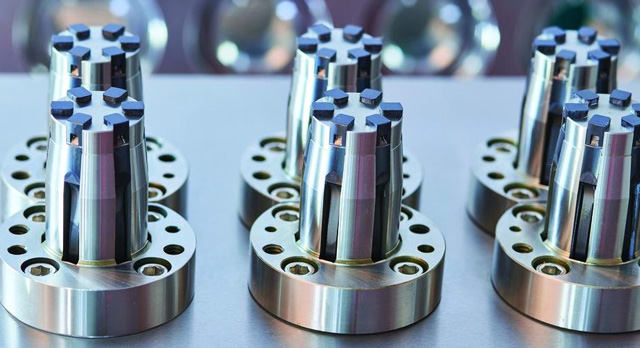
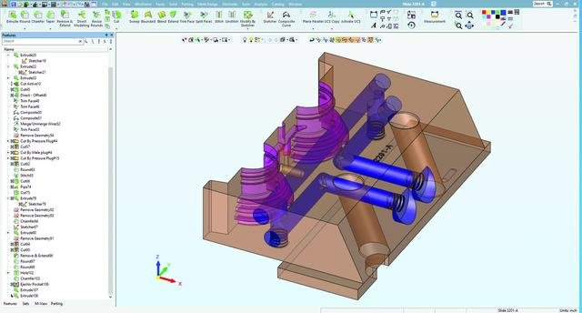
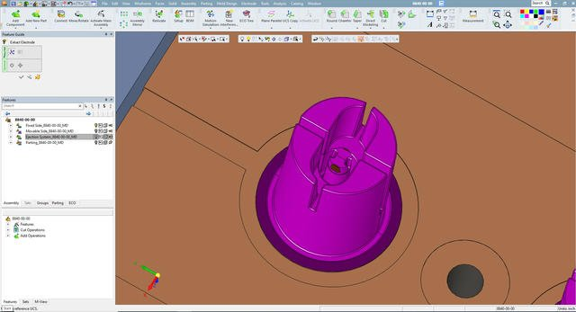
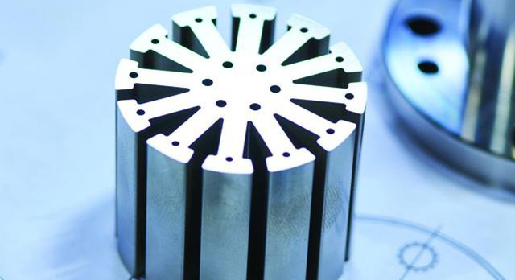
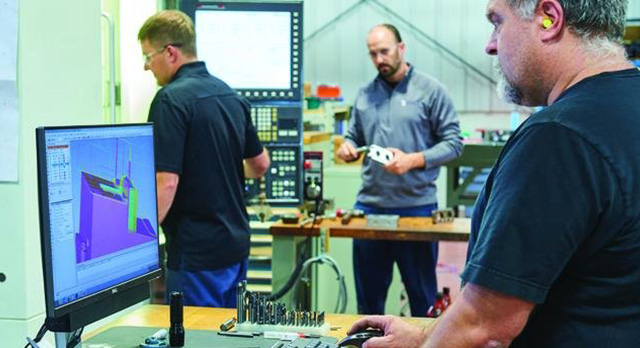

INDUSTRIA
Ottenere il successo dei primi scatti progettando gli stampi internamente invece di subappaltarli per risparmiare tempo e denaro e mantenere il controllo sul design.
LE SOLUZIONI
Software integrato CAD/CAM Cimatron® per la progettazione e la produzione di stampi
I RISULTATI
- Risparmiato il 15-20% sui tempi di consegna complessivi per progetti che includono la progettazione di stampi e lo sviluppo del prodotto.
- Aggiunto valore al cliente collaborando strettamente in anticipo per una migliore progettazione dei pezzi.
- Mantenuto la fedeltà del cliente accogliendo facilmente gli ECO senza compromettere i tempi di consegna.
- Sperimentato un maggiore controllo sui percorsi utensile NC e migliori finiture superficiali.
- Ridotto il tempo di produzione scegliendo utensili da taglio più piccoli e successivi senza tagliare molta aria in più.
- Risparmiato 1-2 settimane di tempo per ogni progetto di 10 settimane - e quindi denaro - identificando i potenziali problemi in anticipo con l'analisi del movimento.
Synergy MouldWorks, Inc. è un produttore di stampi a iniezione di plastica e un'officina di lavorazione personalizzata specializzata in attrezzature di alta complessità e con tolleranze più strette per il settore medico, automobilistico e dei beni di consumo, compresi tappi e chiusure, imballaggi alimentari e cosmetici. Con sede a Brantford, Ontario, Canada, ha ridotto i tempi di consegna dei suoi stampi fino al 20% e ha migliorato il suo servizio clienti offrendo una stretta collaborazione in anticipo per una migliore progettazione dei pezzi quando ha implementato il software CAD/CAM di Cimatron.
Progettare gli stampi in casa
In precedenza, Synergy MouldWorks subappaltava il suo lavoro di progettazione di stampi a società di ingegneria che utilizzavano SOLIDWORKS e altri software e usavano SURFCAM in casa per la programmazione. Quando il negozio ha aperto nel 2011, è passato a Cimatron per la programmazione NC per ottenere un maggiore controllo sul percorso utensile NC. Secondo l'engineering manager Dave Wadley, "Abbiamo notato la potenza di Cimatron e l'ambiente CAD che ci ha permesso di fare alcune piccole modifiche al design. Ed è questo che ci ha portato a esaminare l'aspetto del software di progettazione stampi. Una volta che abbiamo avuto quella suite di progettazione stampi, è stata una progressione naturale per noi iniziare a progettare i nostri stampi in Cimatron". Il passaggio a Cimatron per la progettazione di stampi ha portato a una nuova specialità per il negozio. Synergy MouldWorks ora aggiunge ancora più valore collaborando strettamente con i suoi clienti nelle prime fasi di un progetto su cose come migliorare il design del pezzo per la stampabilità e le prestazioni e mitigare qualsiasi caratteristica potenzialmente ad alto rischio che potrebbe portare a problemi di funzionamento dello stampo in futuro.
"Siamo coinvolti in un sacco di sviluppo di nuovi prodotti, alcune cose tipo inventore. Spesso siamo pesantemente coinvolti nella fase iniziale", dice il presidente della Synergy MouldWorks, Cory Robertson.
Consegnare gli stampi più velocemente
Robertson nota che una volta che l'azienda ha preso la decisione di passare a Cimatron, ha subito notato il valore di avere i file nativi progettati e programmati in Cimatron. "Troviamo che Cimatron sia davvero agile", dice.
Soluzione CAD/CAM integrata
Robertson sottolinea anche il valore di avere una soluzione CAD/CAM integrata. "Alcuni pacchetti 3D là fuori, come SOLIDWORKS, sono orientati alla progettazione di prodotti e non comprendono tutto. Non sono così completi come Cimatron dal punto di vista della progettazione di stampi, della progettazione del prodotto e del controllo numerico, tutto in un unico prodotto. È specifico per lo sviluppo del prodotto. È una soluzione unica".
Wadley è d'accordo e aggiunge: "Funziona bene. Copre tutte le nostre esigenze di mercato tra NC e design".

Cimatron è per noi uno sportello unico che si occupa della progettazione dei nostri stampi, degli elettrodi e si integra perfettamente con il nostro CN
Accogliere gli ECO
Sia Robertson che Wadley affermano che Cimatron li aiuta a mantenere la fedeltà dei clienti grazie alla facilità con cui si adattano agli ordini di modifica tecnica (ECO) senza compromettere i tempi di consegna.
Robertson dice che Cimatron li aiuta a rimanere flessibili e agili durante il processo di progettazione iniziale. "Uno degli enormi vantaggi offerti da Cimatron è la facilità con cui possiamo accogliere le modifiche dei pezzi".
Wadley aggiunge: "Cimatron ha una funzione chiamata ECO manager che funziona bene per modificare il pezzo e fargli aggiornare intuitivamente il progetto dello stampo mentre si procede. Ci sono solo pochi elementi da tirare per mettere tutto insieme. Questo è molto prezioso per noi quando dobbiamo andare a modificare queste parti tre o quattro o cinque volte mentre il progetto dello stampo sta iniziando".
Con Cimatron, si può mostrare il cambiamento effettivo del prodotto direttamente in un modello solido e poi aggiornare il progetto molto facilmente per riflettere il nuovo concetto e condividerlo con i clienti. Ci sono molti più casi in cui l'officina può attenersi alla tempistica originariamente prevista perché il progettista è stato in grado di aggiornare facilmente i progetti al volo invece di dover tornare dal cliente e chiedere più tempo. "Quindi questo è un vantaggio commerciale. Ci aiuta a fidelizzare il cliente, perché non stiamo abbandonando le consegne o chiedendo più tempo. E c'è un valore aggiunto nell'essere in grado di accomodare i loro cambiamenti di design senza che questo abbia un impatto negativo", nota Robertson.
Wadley apprezza anche gli avvisi di modifica di Cimatron. Funziona senza soluzione di continuità tra le modifiche di progettazione, il design e il controllo numerico. Quando aggiorna i modelli sul lato ingegneristico, i ragazzi in officina NC ricevono una piccola icona di stato che appare e li informa che c'è stato un cambiamento di revisione e che devono sapere che devono cercare una nuova revisione. "È fantastico che Cimatron faccia questo", conclude Dave.
Uno degli enormi vantaggi offerti da Cimatron è la facilità con cui possiamo accogliere le modifiche dei pezzi. Avendo questa versatilità e flessibilità, stiamo risparmiando il 15-20% su un progetto complessivo che include la progettazione degli utensili e lo sviluppo del prodotto.
Estrazione dai cataloghi
Altre caratteristiche di Cimatron che fanno risparmiare tempo e che Wadley usa spesso sono la catalogazione e la creazione rapida della distinta dei materiali (BOM).
"È abbastanza intuitivo aggiungere pezzi dai cataloghi di Cimatron, che sono fantastici. Sono completamente caricati da tutte le principali aziende come DMS, DME e PCS. Cimatron fornisce tutte queste librerie CAD completamente compilate. E man mano che si inseriscono questi pezzi, la distinta dei materiali viene aggiornata automaticamente. Quindi la creazione della distinta dei materiali alla fine del lavoro è molto semplice e meno soggetta a errori, dato che non è necessario scrivere a mano i numeri dei pezzi. Davvero, basta un clic di un pulsante ed ecco fatto", riassume Wadley.
Ridurre il tempo di produzione con le opzioni degli utensili da taglio
Cimatron ha anche aiutato Synergy MouldWorks a ridurre i tempi di produzione.
"Cimatron offre alcune interessanti funzioni NC come le procedure di rilavorazione che ci permettono di scegliere utensili da taglio più piccoli e successivi senza dover tagliare molta aria in più, il che si traduce in un enorme risparmio di tempo", dice Wadley.



Usare l'analisi del movimento per identificare i problemi e fornire primi pezzi di buona qualità
Un'altra caratteristica di Cimatron che piace a Wadley e che usa per identificare i problemi in anticipo è l'analisi del movimento. C'è un buon motore cinematico incorporato per l'analisi del movimento che usano per vedere se i loro sollevatori o le guide funzionano come previsto. Noterà potenziali crash, potenziali guasti, se non c'è abbastanza corsa, e altri problemi che potrebbero essere sfuggiti. "Questo ci fa risparmiare tempo lungo la strada. È più facile vedere un potenziale problema all'inizio che alla fine della costruzione dello strumento nella preparazione. Se riusciamo a individuarlo in anticipo, possiamo risparmiare un sacco di riprogettazione, blocchi di taglio e denaro", dice Wadley.
Per esempio, hanno notato che uno dei sollevatori in uno stampo stava per causare un problema all'espulsione. Non l'avevano notato finché non hanno eseguito l'analisi. Sono stati in grado di correggerlo nel progetto prima ancora che l'acciaio fosse tagliato, il che ha permesso di risparmiare una o due settimane di ritardi e di consegnare il pezzo in tempo.
Wadley nota anche che l'uso dell'analisi del movimento dà all'officina una migliore possibilità di successo per i primi colpi, che sono generalmente una linea temporale stretta: "L'analisi del movimento ci dà una migliore possibilità di avere primi pezzi di buona qualità e prime prove di successo".
Facilità d'uso
Wadley ha anche evidenziato alcune caratteristiche di Cimatron che rendono il suo lavoro più facile e riducono i clic sui pulsanti sia per la progettazione dello stampo che per la programmazione NC.
Per esempio, per la progettazione dello stampo, inserire le linee dell'acqua e i perni di espulsione è super facile e intuitivo in Cimatron.
Sul lato NC, "Il lavoro è diventato più facile in Cimatron perché si realizzano rapidamente i guadagni usando funzioni come i modelli NC e la foratura automatica. L'automazione di alcuni compiti monotoni rende la vita più facile dal punto di vista della programmazione NC. Cimatron è sempre al lavoro per ridurre i clic dei pulsanti".
Il programmatore NC Matt Donald aggiunge che Cimatron è molto facile da usare in generale: "Dopo un paio di settimane, lo si impara davvero ed è davvero piacevole. Abbiamo avuto nuovi dipendenti che hanno iniziato e nel giro di due settimane erano già pronti a fresare e rifinire senza dover fare domande, a produrre chip".
"Cimatron è un software piuttosto facile da utilizzare. Non c'è nient'altro che lo batte, secondo me", conclude Wadley.



Migliorare il controllo del percorso utensile NC e la qualità della finitura superficiale
Oltre all'iniezione di stampi in plastica, Synergy MouldWorks è specializzata in soluzioni di lavorazione personalizzate, per le quali Wadley dice che userebbero il pacchetto NC di Cimatron da solo.
In precedenza, usavano SURFCAM per la programmazione NC. "Quando siamo passati a Cimatron, abbiamo avuto un maggiore controllo sul percorso utensile NC", dice Wadley. "Ci piaceva per il controllo sul lato NC delle cose. Avevamo un maggiore controllo sulla manipolazione dei percorsi utensile a 3 assi. Migliore finitura delle superfici. Solo l'intuitività basata sui solidi del software era piacevole. Mentre in SURFCAM lavoravamo in un ambiente wire-frame".
"Un altro fattore decisivo era la facilità con cui potevamo usare i modelli solidi per manipolare i nostri file NC", dice Robertson. "Perché, nell'industria degli stampi, non si tratta solo di semplici blocchi tagliati e via. Sono tutti pezzi unici e sono generalmente molto complessi, quindi dobbiamo fare molte regolazioni al volo per migliorare la lavorazione. Cimatron ci permette di farlo in officina con relativa facilità".
Non c'è un ufficio di programmazione alla Synergy MouldWorks. Ognuno esegue la propria programmazione NC direttamente dalla propria postazione di lavoro. "Contiamo sul fatto che i ragazzi in officina siano in grado di lavorare e programmare le loro macchine NC, oltre a guardare i file di montaggio per mettere insieme uno stampo. Non fanno disegni generali di assemblaggio in officina. In questo Cimatron ci aiuta molto", dice Robertson.
Cimatron lavora molto bene per noi nel campo della lavorazione personalizzata e della produzione di stampi. Le loro strategie NC sono ottime
Supporto tecnico e formatori esperti
Sia Robertson che Wadley hanno notato che la formazione e il supporto tecnico offerti da Cimatron sono eccellenti.
Wadley riassume la sua esperienza dicendo "L'assistenza clienti di Cimatron non è seconda a nessuno. Hanno un team di supporto tecnico davvero eccellente e sono davvero sempre presenti ogni volta che ne hai bisogno per fornire assistenza tramite WebEx o al telefono. Oppure, se hai bisogno di formazione, vengono nel tuo negozio. Le loro porte sono sempre aperte. Sono sempre stati competenti e facili da frequentare, proprio un bel gruppo di ragazzi".
Riunioni regionali del gruppo di utenti
Ogni anno si tengono riunioni regionali dei gruppi di utenti, durante le quali gli ingegneri applicativi di Cimatron illustrano gli aspetti delle nuove versioni. "È bello incontrare questi ragazzi e parlare del software e dei cambiamenti avvenuti con l'ultima versione", dice Wadley. "Non vale la pena perderselo. Anche se si porta via qualche cosa da uno di questi seminari, può essere davvero utile".
Wadley trova anche che l'aspetto comunitario degli incontri annuali del gruppo di utenti sia un bonus: "È bello fare rete e incontrare altri che stanno usando il software. Le persone iniziano a parlare di come usano il software e questo potrebbe far scattare qualcosa nella mia mente su come potrei fare qualcosa in modo diverso, un po' più efficiente".

Nuove funzionalità per la costruzione di stampi
Ogni anno viene rilasciata una nuova versione di Cimatron, oltre a continui aggiornamenti mensili dei cataloghi e dei piccoli miglioramenti, che secondo Wadley sono semplici da scaricare e installare, e il pannello di controllo di Cimatron avvisa automaticamente gli utenti quando ci sono nuovi aggiornamenti software. "Non mi piace aspettare gli aggiornamenti delle nuove versioni del software, perché in genere ogni anno ci sono dei progressi che vorrei vedere e sfruttare", conclude Wadley."